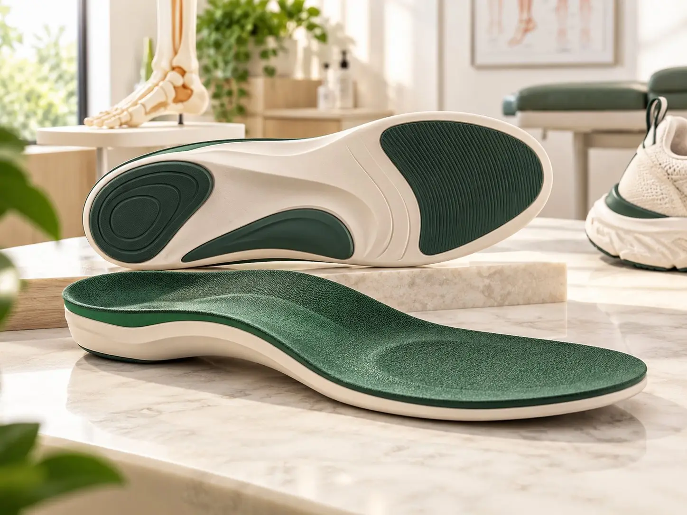
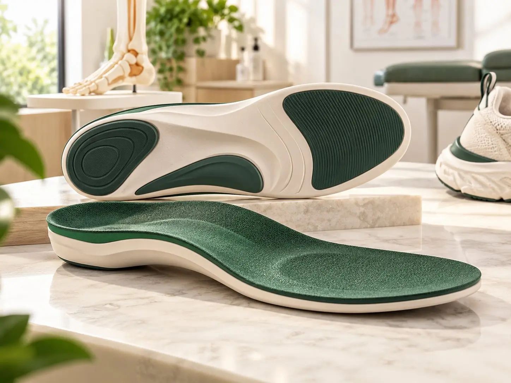
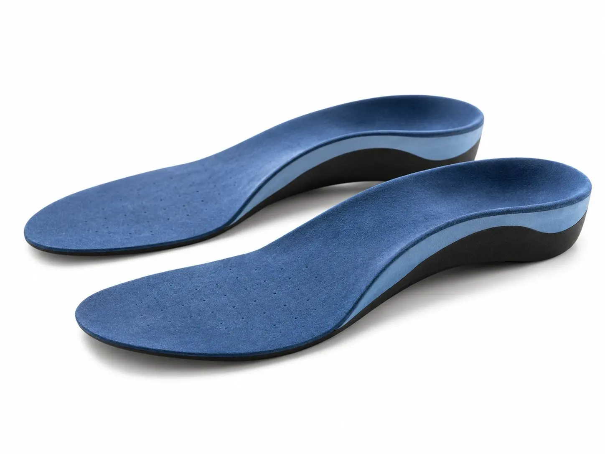
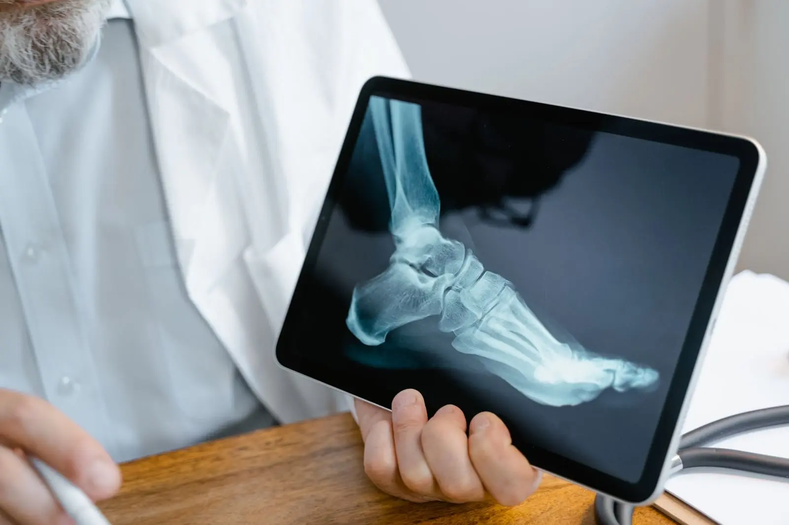

Are Custom Foot Orthotics Worth It? And How Long Do They Last?
Custom insoles can make a real difference for some foot problems. Here's an honest look at who they help and when a shop insole will do.
Insoles made from the shape of your own feet. They can ease heel pain, support flat feet and spread pressure more evenly when you stand and walk.


Custom foot orthotics are insoles made just for your feet. We take the shape of your feet, look at how you stand and walk, and then make an insole that supports your foot in a better position.
They’re different from the insoles you buy in a shop. A shop insole is made for an “average” foot. A custom orthotic is made for yours.
Foot orthotics may help if you have:
Orthotics aren’t the answer for every foot problem. If we think something else would help more, like a different shoe or a visit to your doctor or physiotherapist, we’ll tell you.
Start slowly. Wear them for an hour or two on day one and add a little more each day. Most people are wearing them all day within one to two weeks.
You might notice new feelings in your feet, knees or hips at first. That’s your body getting used to a new position. But if you get blisters, sharp pain or the pain keeps getting worse, stop and contact us.
Want to know more? Read our guide on whether custom foot orthotics are worth it.

They can be, if your foot problem comes from the way your foot is shaped or the way it moves. Custom orthotics are made from your own foot, so they support it more exactly than most shop-bought insoles. For mild aches, a good ready-made insole may be enough. We'll tell you honestly which we think you need.
It depends on the material, your weight and how much you're on your feet. Many last a year or more. Bring them in if the top cover wears through, they crack or your pain comes back.
They fit best in shoes with a removable insole and enough depth, like trainers and many work shoes. Slim versions can fit some dress shoes. Bring the shoes you wear most to your appointment.
Most people take one to two weeks. Start with an hour or two on the first day and add a little more each day. Some new feelings in your feet or legs are normal at first, but pain isn't.
Store-bought insoles come in set shapes and sizes. Custom orthotics are made from a cast or scan of your feet, so they match your arches, heels and pressure points. They're also made to deal with your specific problem.
This page gives general information only. It isn't medical advice. Please talk to your doctor or our team about your own needs.

Custom insoles can make a real difference for some foot problems. Here's an honest look at who they help and when a shop insole will do.
Get a personalized evaluation and the right mobility solution at our Rawalpindi clinic.